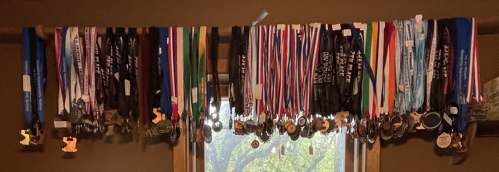
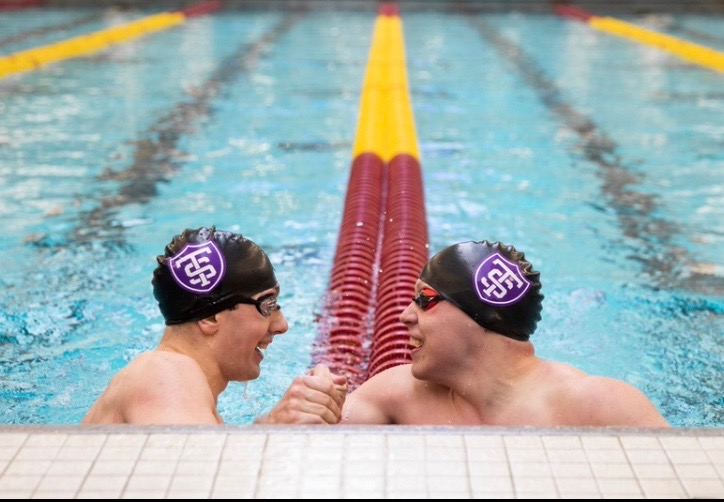

Logan Shafer's Website: Resume
_____________________________
Resume
Education:
Work experience:
Awards:
Mostly medals from my swimming career lol.

I am also the Saint Thomas school record holder for the 200 yard Breaststroke and 400 yard I.M.
Below is a pic after the 200 Breast with my teammate.
